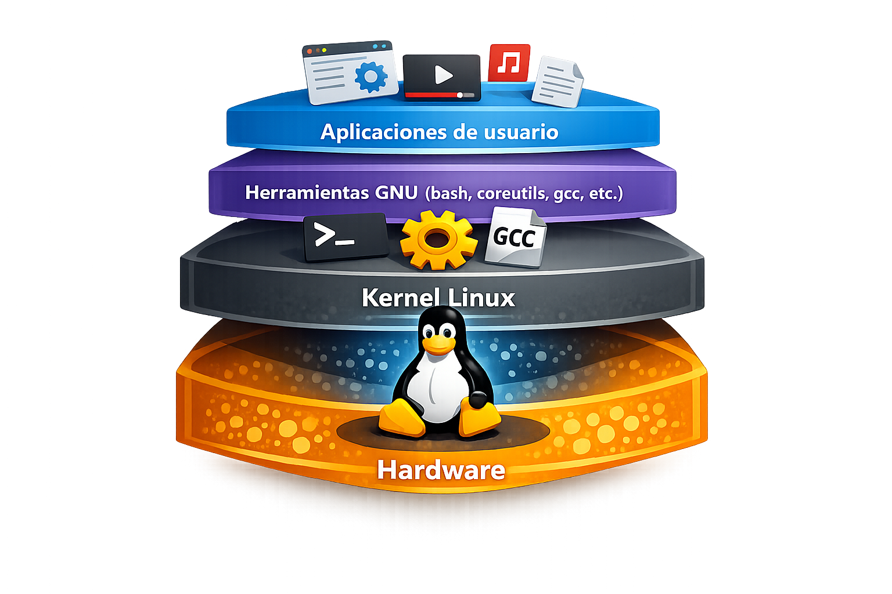
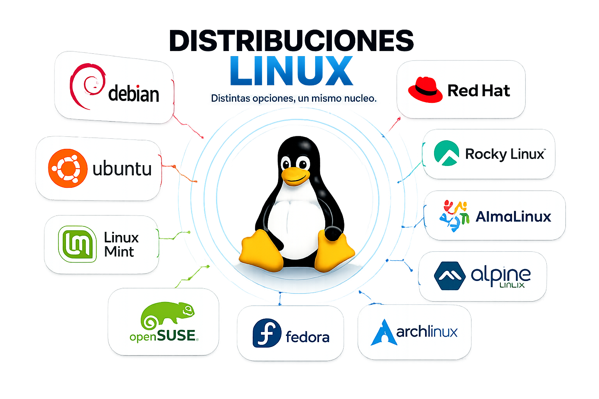

Administración de servidores GNU/Linux
Clase 1: Introducción a Linux
Módulo 1 — Historia, Fundamentos y Ecosistema Linux
Temas de clase 1
Introducción a Linux
Objetivos de la clase
Al finalizar esta clase vas a poder:
- Explicar de dónde viene Linux y por qué existe.
- Diferenciar kernel, shell y distribución.
- Entender qué es el Software Libre y por qué importa la licencia que elijas.
- Distinguir entre las principales familias de distros y para qué sirve cada una.
- Tener un panorama real de cuánto se usa Linux hoy (servidor y escritorio).
Historia y Conceptos:
De Unix al Proyecto GNU y el Kernel Linux
¿Qué es un Sistema Operativo?
- Es el software que administra el hardware (CPU, memoria, disco, red) y ofrece una interfaz para que las aplicaciones y el usuario trabajen.
- Tareas centrales: gestión de procesos, memoria, archivos, dispositivos y permisos.
- En este curso el foco va a estar en entornos sin interfaz gráfica (servidores), porque es el escenario más común en la administración de Linux.
Windows, macOS, Linux y Android son todos sistemas operativos, pero con historias, filosofías y modelos de negocio muy distintos.
Los orígenes: Unix (1969)
- Nace en los Bell Labs (AT&T), creado por Ken Thompson y Dennis Ritchie.
- Introduce ideas que siguen vigentes: "todo es un archivo", programas pequeños
que se combinan (
|), sistema multiusuario y multitarea. - Era un software propietario y costoso: cada universidad o empresa pagaba licencia para usarlo.
- Esa restricción generó tensión en la comunidad académica, que quería compartir y modificar el código libremente.
Este conflicto es el que da origen al movimiento del software libre.
Software Libre
el Proyecto GNU (1983)
- Richard Stallman, investigador del MIT, funda el Proyecto GNU ("GNU's Not Unix") en 1983.
- Objetivo: crear un sistema operativo completo, compatible con Unix, pero 100% libre.
- En 1985 crea la Free Software Foundation (FSF).
- Para 1991, GNU ya tenía casi todas las herramientas clave de un sistema Unix:
- Compilador y toolchain:
gcc,make,gdb - Shell:
bash - Editor de texto:
emacs - Utilidades de sistema:
grep,ls,cp,tar,sed
- Compilador y toolchain:
...pero le faltaba una pieza clave: el kernel.
Linux: el kernel que faltaba (1991)
- Linus Torvalds, estudiante de la Universidad de Helsinki, Finlandia, comienza como proyecto personal un kernel tipo Unix.
- Lo anuncia en Usenet en agosto de 1991, describiéndolo como "un hobby, no será grande ni profesional como GNU".
- Lo licencia bajo GPL, lo que permite que se combine con las herramientas de GNU.
- Resultado: el kernel Linux + las herramientas GNU = un sistema operativo libre y completo.
GNU/Linux: un sistema completo
- Por eso técnicamente se llama GNU/Linux, aunque coloquialmente se dice solo "Linux".
- El kernel es el corazón: gestiona procesos, memoria, drivers y el acceso al hardware.
- Todo lo demás (shell, comandos, gestor de paquetes, entorno gráfico) se arma alrededor de ese kernel.

Consultas
(Unix → Proyecto GNU → Kernel Linux → GNU/Linux)
Licencias de Software:
Modelos y Diferencias (GPL vs Permisivas)
Licencias de software: lo esencial
| Licencia | Modifico y redistribuyo | ¿Debo compartir cambios? | Ejemplos |
|---|---|---|---|
| GPL (v2/v3) | Sí | Sí, obligatorio (copyleft) | Kernel Linux, bash |
| MIT / BSD | Sí | No, es opcional | Librerías, X11 |
| Apache 2.0 | Sí | No, pero protege patentes | Android (parte), Kubernetes |
- GPL es "viral": si tomás código GPL y lo modificás, tu resultado también debe ser GPL.
- MIT/BSD/Apache son "permisivas": una empresa puede tomarlas y hacer software cerrado con ellas.
- Esto explica por qué empresas como Google o Apple prefieren licencias permisivas en ciertos proyectos.
Consultas
(GPL vs MIT/BSD vs Apache — Copyleft vs Permisivas)
Arquitectura y Distribuciones:
Kernel, Shell y Familias de Distros
Arquitectura: Kernel, Shell y Distribución
- Kernel: El núcleo del sistema. La mayoría de las distribuciones utilizan Linux, aunque pueden emplear distintas versiones, configuraciones y parches. Gestiona el hardware, los procesos y la memoria.
- Shell: El intérprete de comandos (
bash,zsh). Es la interfaz que vamos a utilizar mayormente durante el curso. - Distribución (distro): Kernel + herramientas GNU + gestor de paquetes + configuraciones + sistema de inicio y gestión de servicios + (a veces) entorno gráfico, empaquetado y mantenido por un proyecto u organización.
- Sistema de inicio (init): Se encarga de iniciar el sistema y gestionar
los servicios. Existen distintas implementaciones, como
systemd,SysVinity otras.
La mayoría de las distros utilizan el mismo kernel: Linux. Lo que cambia es todo lo que lo rodea: herramientas, servicios, configuración, paquetes y la forma de administrar el sistema.
¿Qué es una distro y por qué importa?
Elegir distro no es un detalle menor, define:
- Qué gestor de paquetes vas a usar (
apt,dnf,pacman,apk). - Cuánto tiempo de soporte y actualizaciones vas a tener.
- Si hay soporte comercial disponible (crítico en empresas).
- La estabilidad vs. la actualidad del software (versiones nuevas vs. probadas).
- La comunidad y documentación disponible ante un problema.
En el mundo profesional, la distro que uses en producción va a depender del contexto del cliente/empresa, no de tu gusto personal.
Familias de distribuciones
Linux (kernel)
│
┌────────────────┼─────────────────┐
Debian family RHEL family Independientes
│ │ │
Debian, Ubuntu, RHEL, CentOS, Arch, Alpine,
Mint, Kali... Rocky, Alma, Slackware,
Oracle Linux, Gentoo...
Fedora, SUSE*
*SUSE tiene su propia familia (openSUSE/SLES), no deriva de RHEL.
Casi todas las distros derivan de otra o comparten herramientas base — aprender "Debian bien" sirve también en Ubuntu, Mint, Kali, etc.

Debian y Ubuntu
Debian
- Uno de los proyectos libres más antiguos (1993). 100% comunitario, sin empresa detrás.
- Extremadamente estable: prioriza que "todo funcione" sobre tener la última versión.
- Gestor de paquetes:
apt/dpkg(formato.deb).
Ubuntu
- Creado por Canonical (2004), basado en Debian.
- Pensado para ser más amigable y con ciclos de soporte claros (LTS = 5 años).
- El más usado en la nube y en tutoriales.
Arquitecturas soportadas por Debian
Debian se caracteriza por su gran versatilidad y soporte multiplataforma ("el sistema operativo universal"), estando disponible para diversas arquitecturas de hardware:
| Arquitectura | Nombre / Descripción |
|---|---|
amd64 |
PC 64-bit (Intel / AMD x86-64) |
arm64 |
ARM 64-bit (AArch64 - Servidores, Raspberry Pi 3+, Apple Silicon) |
armhf |
ARM 32-bit Hardware Float (Raspberry Pi, sistemas embebidos) |
*hurd-i386 |
GNU/Hurd 32-bit (Kernel GNU Hurd en procesadores x86 32-bit) |
mips64el |
MIPS 64-bit Little-Endian (Sistemas MIPS) |
ppc64el |
PowerPC 64-bit Little-Endian (Servidores IBM POWER) |
riscv64 |
RISC-V 64-bit (Arquitectura abierta de 64 bits) |
s390x |
IBM System z / Mainframes 64-bit |
RHEL y Oracle Linux
Red Hat Enterprise Linux (RHEL)
- Modelo de negocio basado en soporte pago, no en licencia de uso.
- Estándar de facto en empresas grandes y gobiernos. Certificaciones (RHCSA/RHCE) muy valoradas.
- Gestor de paquetes:
dnf(antesyum), formato.rpm.
Oracle Linux
- Recompilación binaria de RHEL, mantenida por Oracle, con soporte propio más económico.
- Muy usada en infraestructura Oracle (bases de datos, middleware).
- (Otra mencionable: SUSE Linux Enterprise, fuerte en Europa y SAP)
Rocky Linux / AlmaLinux: la herencia de CentOS
- CentOS era la versión gratuita y comunitaria de RHEL (recompilada desde el código fuente).
- En 2020, Red Hat anunció el fin de CentOS tradicional, reemplazándolo por CentOS Stream (versión rolling/preview).
- La comunidad necesitó un reemplazo 1:1 y gratuito de RHEL, dando origen a:
- Rocky Linux: liderado por Gregory Kurtzer (cofundador de CentOS).
- AlmaLinux: impulsado por CloudLinux.
- Hoy ambas son las opciones estándar cuando se necesita "RHEL sin pagar licencia".
Alpine Linux: la distro en contenedores
- Distribución minimalista, pensada para seguridad y bajo consumo de recursos.
- No usa
glibcsino musl libc, ybusyboxen lugar de las herramientas GNU tradicionales. - Su imagen base puede pesar ~5 MB, contra cientos de MB de otras distros.
- Estándar de facto como imagen base en Docker
(
FROM alpine). - Por defecto, es un sistema Linux sin el stack GNU tradicional.
Arch Linux y sus derivados
- Filosofía: simplicidad, control total y documentación excelente (Arch Wiki es referencia universal).
- Modelo rolling release: no hay "versiones", el sistema se actualiza continuamente.
- Instalación manual, pensada para quien quiere entender cada pieza del sistema.
- Gestor de paquetes:
pacman, y el AUR (Arch User Repository). - Derivados populares: Manjaro, EndeavourOS, Garuda Linux — buscan la base de Arch con instalación más simple.
Linux vs Windows: comparativa
| Característica | Linux | Windows |
|---|---|---|
| Licencia | Libre / abierta (mayormente gratis) | Propietaria, de pago |
| Código fuente | Abierto, auditable | Cerrado |
| Modelo en servidor | Sin GUI (headless), gestión CLI | Suele incluir GUI, gestión gráfica |
| Personalización | Muy alta | Limitada por diseño |
| Soporte | Comunidad / Comercial (Red Hat, Canonical) | Oficial de Microsoft |
| Costo a escala | Bajo o nulo | Puede ser muy alto |
Consultas
(Kernel único + Familias: Debian, RHEL, Independientes)
Cuota de Mercado y Desktop:
Servidores, Escritorio y Casos del Estado
Cuota de mercado real (servidores)
- Linux representa aproximadamente el 44,8% del mercado global de servidores (2024), proyectando el 51% para 2026.
- Controla alrededor del 90% de la infraestructura de nube pública (AWS, Azure, GCP).
- El 100% de las supercomputadoras del TOP500 corren Linux desde 2017.
- Entre servidores web que revelan su SO, Linux domina ampliamente frente a Windows Server.
Fuentes: Fact.MR / Fortune Business Insights, W3Techs, TOP500.org
Cuota de mercado real (escritorio)
Datos de StatCounter (abril 2026):
| Sistema Operativo | Cuota de escritorio |
|---|---|
| Windows | ~66,6% |
| macOS | ~7,3% |
| Linux | ~3,0% |
- Linux en escritorio crece sostenidamente (venía de ~2,8% en 2022).
- Contexto extra: Android (kernel Linux) domina el mercado móvil con más del 67%.
Linux Desktop en la empresa
- El bajo porcentaje de escritorio no significa que sea inviable en un entorno corporativo.
- Hay organizaciones y profesionales de IT/dev que usan Linux Desktop como herramienta diaria.
- A lo largo del curso haremos un laboratorio dedicado a Linux Desktop, con una comparativa más profunda contra Windows.
Linux no es solo un sistema de servidor.
Linux Desktop en el Estado: Argentina
- GobMis:
Distribución propia de la Provincia de
Misiones, basada en Devuan 6 (Debian 13). Pensada para la administración
pública provincial. Ultima versión estable marzo 2026. Kernel 6.18
GobMis GNU/Linux procura la soberanía tecnológica y respeta plenamente el Decreto Provincial N°1800/07, que establece la obligatoriedad de utilizar el Estándar Abierto para Documentos Ofimáticos (ODF: OpenDocument ISO/IEC 26300/06) en la Administración Pública Provincial, al incorporar LibreOffice como suite ofimática estándar. ¹
- Lihuen: Distro desarrollada por la UNLP orientada a educación (discontinuada).
- Huayra GNU/Linux: Proyecto nacional impulsado por Educ.ar para el plan Conectar Igualdad.
Crear una distro es relativamente accesible; sostenerla en el tiempo con soporte y comunidad es el verdadero desafío.
Linux Desktop en el Estado: Unión Europea
- Schleswig-Holstein (Alemania): Migración de ~30.000 puestos a LibreOffice y Linux (KDE Plasma) por soberanía digital.
- Lyon (Francia): Abandonó Windows y MS Office migrando a Linux y FOSS.
- Antecedente histórico: Múnich con LiMux (2004) migró ~15.000 equipos pero terminó revirtiendo por gestión del cambio y compatibilidad.
La tendencia europea es creciente, pero recuerda que el éxito depende de la tecnología y de la gestión del cambio.
Consultas
(Cuota de mercado: ~51% servidores, ~3% escritorio)
Actividades practicas y laboratorios
Actividades prácticas
- Registrarse e ingresar en el Campus Virtual
- Inscribirse en el curso Administración de Servidores GNU/Linux como indica este instructivo